S31 — हम चीज़ें भूल क्यों जाते हैं?
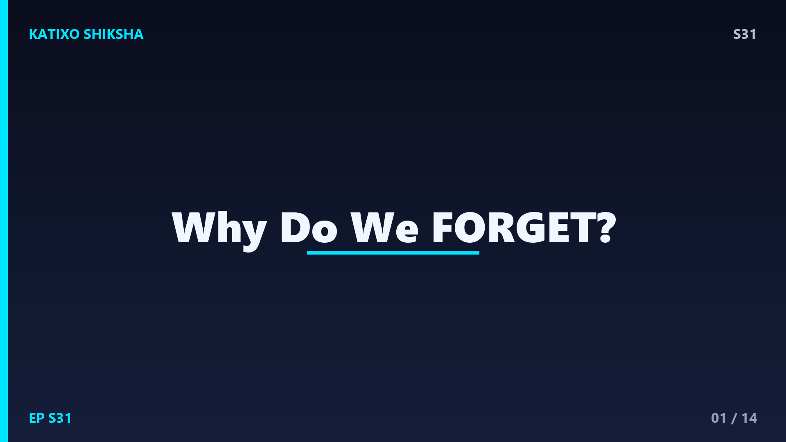
Slide 1दोस्तों, कल रात तुमने जो खाना खाया था, वो तो याद है... लेकिन तीन हफ़्ते पहले मंगलवार को क्या खाया था? गायब! और exam में जो answer रट के गए थे, वो ऐन मौके पर दिमाग से कैसे फिसल जाता है? आज Katixo Shiksha पर हम solve करेंगे एक मज़ेदार रहस्य — हमारा brain चीज़ें भूलता क्यों है। और सबसे बड़ी बात — भूलना actually एक bug नहीं, बल्कि एक feature है! चलो शुरू करते हैं।
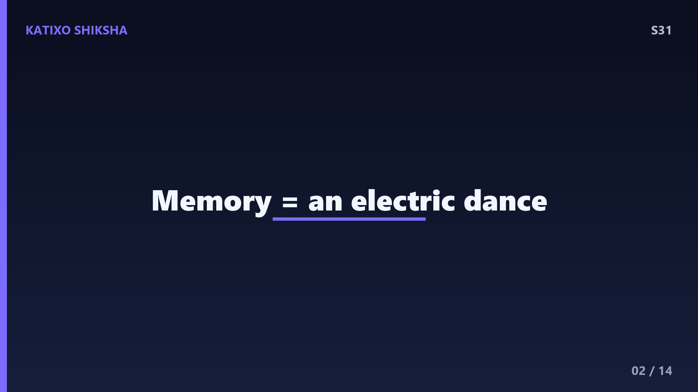
Slide 2पहले समझो कि memory बनती कैसे है। तुम्हारे brain में करीब 86 billion neurons हैं, छोटे-छोटे cells जो आपस में बातें करते हैं। जब तुम कुछ नया सीखते हो, तो इन neurons के बीच connection बनते हैं जिन्हें synapses कहते हैं। एक memory असल में कोई file नहीं है, बल्कि neurons का एक खास pattern है जो एक साथ जलते हैं। जितनी बार तुम उस pattern को use करते हो, connection उतना ही strong होता जाता है। यानी memory कोई चीज़ नहीं, एक electric dance है दिमाग के अंदर।
Slide 3अब मान लो तुमने एक नया phone number याद किया। शुरू में वो रहता है short-term memory में, जो सिर्फ़ कुछ seconds से minutes तक चलती है और इसमें सिर्फ़ 7 के आसपास चीज़ें fit होती हैं। अगर number काम का लगा, तो brain उसे long-term memory में shift करता है। इस process को कहते हैं consolidation, और इसका सबसे बड़ा काम होता है रात को, जब तुम सोते हो। इसीलिए दोस्तों, बिना नींद के रट्टा मारना बेकार है — neend ही memory को permanent बनाती है।
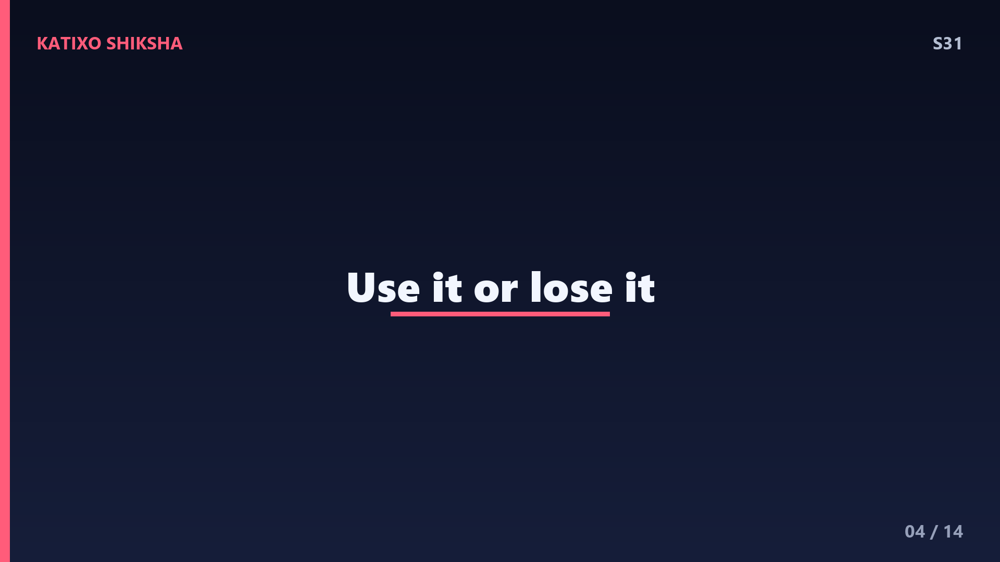
Slide 4तो भूलते क्यों हैं? पहला कारण है decay theory. अगर किसी memory का pattern बार-बार use नहीं होता, तो उसके synapse कमज़ोर पड़ जाते हैं, ठीक वैसे जैसे जंगल में कोई रास्ता कोई न चले तो घास उग के मिट जाता है। 1885 में scientist Hermann Ebbinghaus ने एक famous experiment किया और बनाया Forgetting Curve. उन्होंने पाया कि एक घंटे के अंदर ही हम सीखी हुई आधी से ज़्यादा नई जानकारी भूल जाते हैं, अगर उसे दोबारा न दोहराएं। तेज़ है ना!
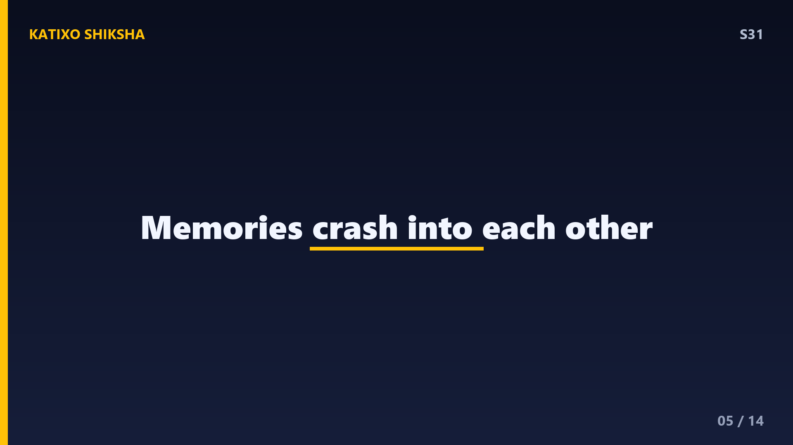
Slide 5दूसरा बड़ा कारण है interference. तुम्हारा brain एक भरी हुई library जैसा है। जब बहुत सारी मिलती-जुलती चीज़ें होती हैं, तो वो आपस में टकराती हैं। जैसे तुमने नया password बनाया, तो पुराना याद आता रहता है — इसे कहते हैं proactive interference. और कभी नई जानकारी पुरानी को ढक देती है — वो है retroactive interference. इसीलिए एक साथ Maths और फिर तुरंत Science के similar formula रटने से गड़बड़ हो जाती है। brain confuse हो जाता है कि कौन सी file कहाँ रखी थी।
Slide 6तीसरा कारण सबसे interesting है — retrieval failure. कई बार memory दिमाग में होती ही है, बस उस तक पहुँचने का रास्ता नहीं मिलता। याद है वो feeling जब कोई शब्द ज़ुबान पर आकर अटक जाता है? इसे scientists tip-of-the-tongue कहते हैं। memory को बाहर निकालने के लिए चाहिए एक cue, यानी एक संकेत। इसीलिए जिस कमरे में पढ़ा था, उसी जैसे माहौल में चीज़ें ज़्यादा अच्छे से याद आती हैं — इसे कहते हैं context-dependent memory।
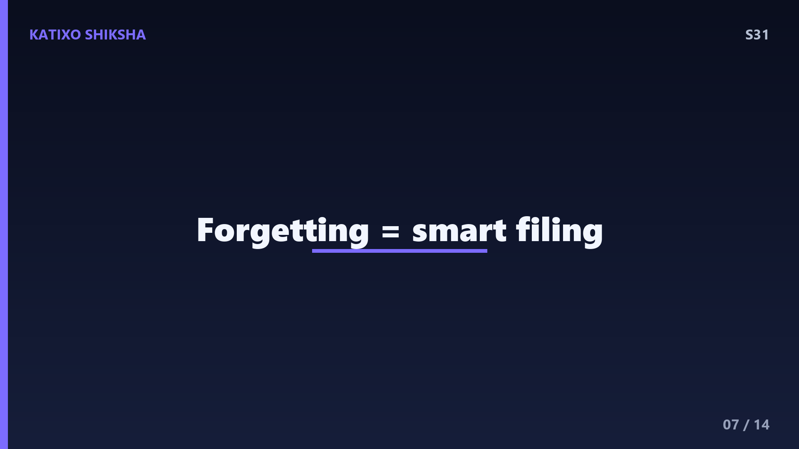
Slide 7अब सबसे चौंकाने वाली बात — भूलना अच्छा भी है! ज़रा सोचो, अगर तुम्हें ज़िंदगी की हर एक छोटी details हमेशा याद रहती — हर चेहरा, हर नंबर, हर बेकार बात — तो दिमाग overload हो जाता। भूलना brain का तरीका है कूड़ा साफ़ करने का, ताकि important चीज़ों के लिए जगह बचे। दुनिया में कुछ ही लोग हैं जिन्हें hyperthymesia है, यानी वो लगभग कुछ नहीं भूलते, और उनके लिए ये अक्सर एक बोझ बन जाता है। यानी भूलना दिमाग की smart filing system है।
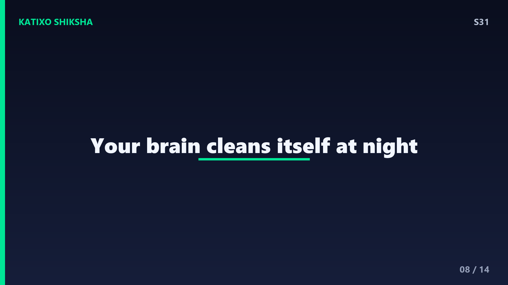
Slide 8नींद का role फिर समझो क्योंकि ये game-changer है। जब तुम सोते हो, खासकर deep sleep में, brain दिन भर की memories को दोबारा चलाता है — इसे कहते हैं replay। ज़रूरी memories को मज़बूत करता है और बेकार connections को कमज़ोर। एक theory कहती है कि नींद में दिमाग खुद को साफ़ करता है, glymphatic system नाम का एक सफ़ाई-तंत्र दिनभर का कचरा बाहर निकालता है। इसीलिए दोस्तों, exam से पहले रातभर जागना actually तुम्हारी memory को नुकसान पहुँचाता है।
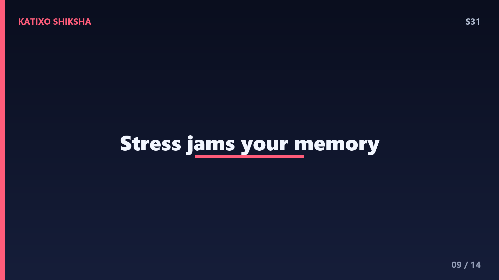
Slide 9stress और emotion भी memory पर ज़बरदस्त असर डालते हैं। थोड़ा-सा emotion memory को मज़बूत करता है — इसीलिए डरावने या खुशी वाले पल सालों याद रहते हैं, इसमें amygdala नाम का part काम करता है। लेकिन ज़्यादा stress उल्टा असर करता है — exam के डर में cortisol hormone बढ़ता है और hippocampus, जो memory का boss है, ठीक से retrieve नहीं कर पाता। यही वजह है कि घबराहट में रटा हुआ answer भी block हो जाता है। relax रहना literally memory की मदद करता है।
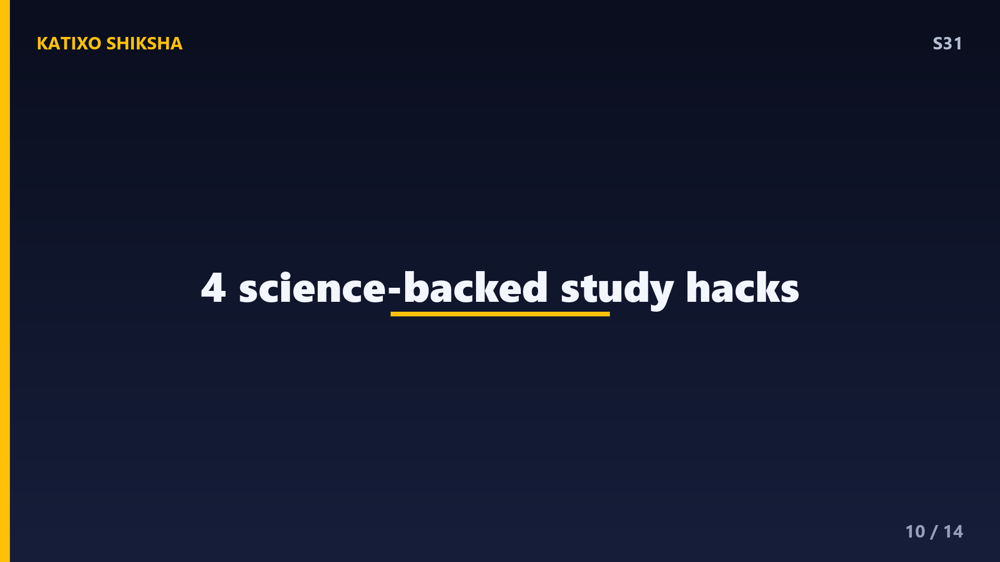
Slide 10तो भूलने से बचने के तरीके क्या हैं? Science कहती है — spaced repetition. एक ही दिन दस बार पढ़ने से बेहतर है कई दिनों में थोड़ा-थोड़ा दोहराना। दूसरा तरीका है active recall — किताब बंद करके खुद से सवाल पूछना, बजाय बार-बार पढ़ने के। तीसरा — नई चीज़ को किसी पुरानी जानी-पहचानी चीज़ से जोड़ना, यानी association बनाना। और भरपूर नींद। ये कोई jugaad नहीं, असली brain science है जो हर topper चुपचाप इस्तेमाल करता है।
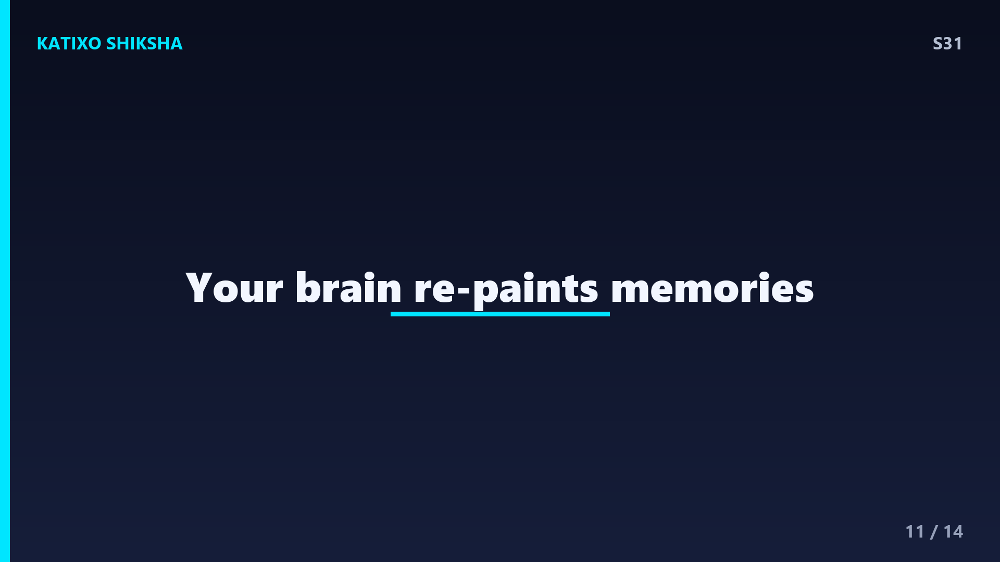
Slide 11एक मज़ेदार fact और — हमारी memory कोई video recording नहीं है। हर बार जब तुम कोई पुरानी बात याद करते हो, दिमाग उसे फिर से बनाता है, और हर बार थोड़ा बदल सकता है। इसीलिए दो दोस्त एक ही घटना को अलग-अलग तरीके से याद रखते हैं! कभी-कभी हमें ऐसी चीज़ें भी पक्की याद होती हैं जो हुईं ही नहीं — इन्हें कहते हैं false memories. तो दोस्तों, memory एक live painting की तरह है, जिसे brain बार-बार थोड़ा-थोड़ा repaint करता रहता है।
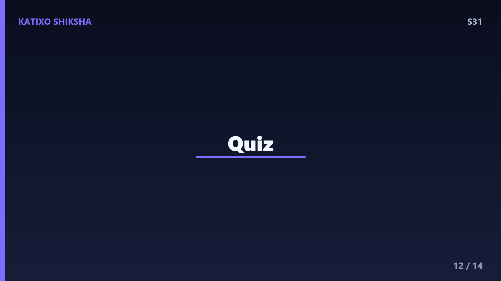
Slide 12Quick brain check! तीनों सवालों के जवाब सोचो, video pause करो और खुद को test करो — यही तो active recall है! पहला — सीखी हुई memory को permanent बनाने में सबसे बड़ी भूमिका किस चीज़ की होती है? दूसरा — जब पुराना password नए को याद करने में रुकावट डालता है, उस effect का नाम क्या है? और तीसरा — Hermann Ebbinghaus की famous curve का नाम क्या था? सोचो, ज़रा दिमाग पर ज़ोर डालो... ready? चलो answers देखते हैं!
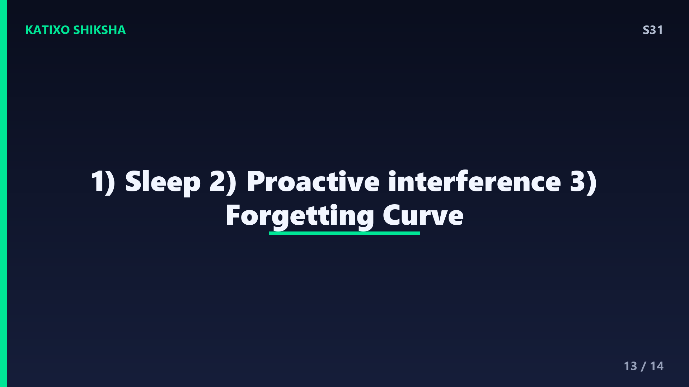
Slide 13जवाब! पहला — memory को permanent बनाने में सबसे बड़ी भूमिका है नींद की, जो consolidation का काम रात को करती है। दूसरा — पुराना password नए में रुकावट डाले तो वो है proactive interference. और तीसरा — Ebbinghaus की curve का नाम है Forgetting Curve, जो बताती है कि हम कितनी तेज़ी से भूलते हैं। कितने सही हुए? अगर तीनों आ गए तो तुम्हारा hippocampus एकदम top form में है, शाबाश!
Slide 14तो आज हमने सीखा — memory neurons का electric pattern है, भूलना decay, interference और retrieval failure से होता है, और सबसे बड़ी बात — भूलना brain का एक smart feature है जो जगह बनाए रखता है। नींद, spaced repetition और active recall तुम्हारे असली weapons हैं। अगले episode में हम जानेंगे एक और कमाल का सवाल — बिजली चमकने के बाद गड़गड़ाहट देर से क्यों सुनाई देती है? मज़ेदार होने वाला है! Subscribe करना मत भूलना — और हाँ, इस बात को भूलना मत! Bye!